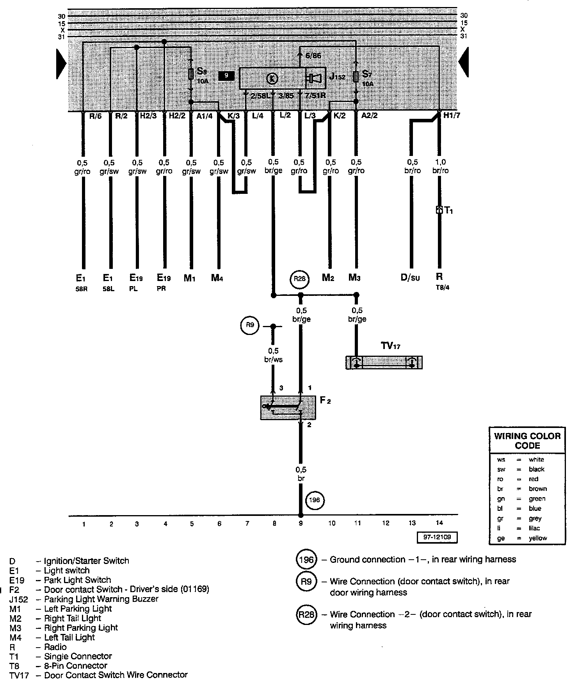

Parking Light Warning Buzzer
IMPORTANT NOTE:
This manufacturer uses "Track" style wiring diagrams.
For information on how to use these diagrams effectively, please refer to Diagram Information and Instructions. Diagram Information and Instructions
Track 1 - 14:

Master Diagram Index: To locate diagrams by component name, please refer to the Master Diagram Index at the vehicle level. Master Diagram Index